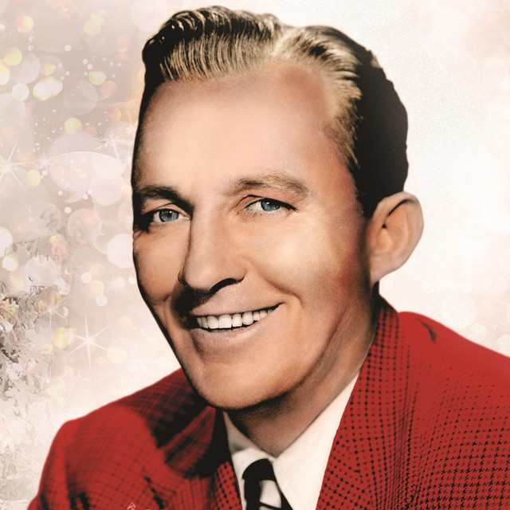
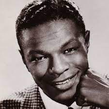
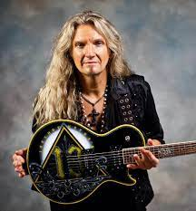
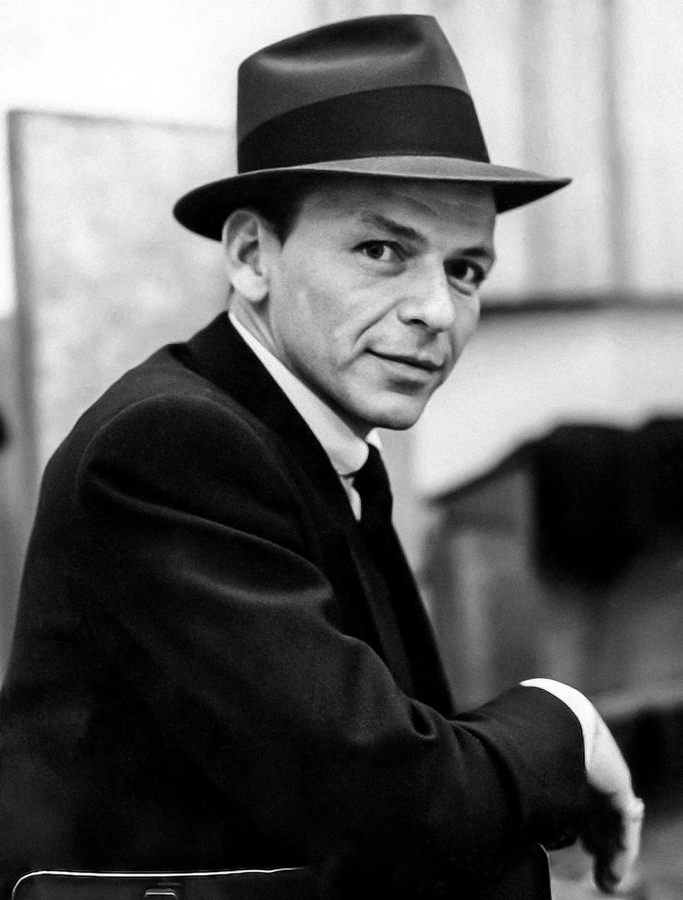
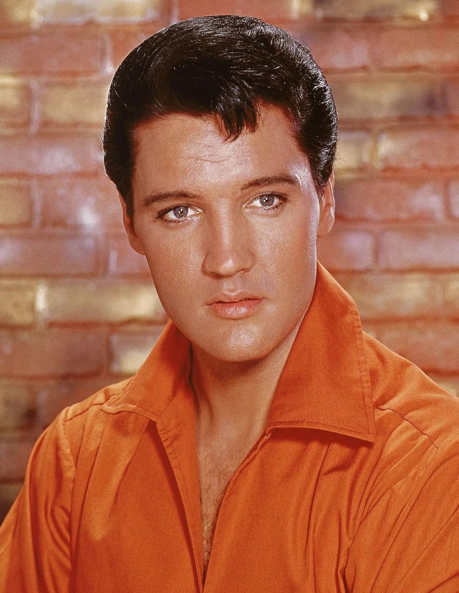
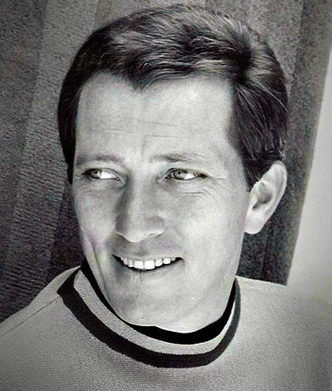

Bing Crosby
Known as the "King of Christmas," Bing Crosby is an iconic crooner who recorded the classic song "White Christmas," which remains a holiday favorite.
Mariah Carey
Mariah Carey's hit song "All I Want for Christmas Is You" has become a modern-day classic and is one of the most streamed songs during the holiday season.
Michael Bublé
Michael Bublé is a contemporary crooner who has released several successful Christmas albums, including "Christmas" and "Noël."
Johnny Mathis
Johnny Mathis is a legendary crooner who has recorded many holiday classics, including "It's Beginning to Look a Lot Like Christmas" and "Sleigh Ride."

Nat King Cole
Nat King Cole's warm and smooth voice is perfect for Christmas music, and his version of "The Christmas Song (Chestnuts Roasting on an Open Fire)" is a holiday staple.

Trans-Siberian Orchestra
The Trans-Siberian Orchestra is a progressive rock band known for their elaborate Christmas-themed concerts and their hit song "Christmas Eve/Sarajevo 12/24."
Pentatonix
Pentatonix is a popular a cappella group that has released several Christmas albums and is known for their unique arrangements of classic holiday songs.

Frank Sinatra
Frank Sinatra's jazzy renditions of holiday classics like "Have Yourself a Merry Little Christmas" and "Jingle Bells" have become timeless holiday favorites.

Elvis Presley
Elvis Presley's rockabilly sound brought a new energy to holiday music with hits like "Blue Christmas" and "Santa Claus Is Back in Town."

Andy Williams
Andy Williams recorded many holiday classics, including "It's the Most Wonderful Time of the Year" and "The Christmas Song," and his annual Christmas television specials became a holiday tradition.